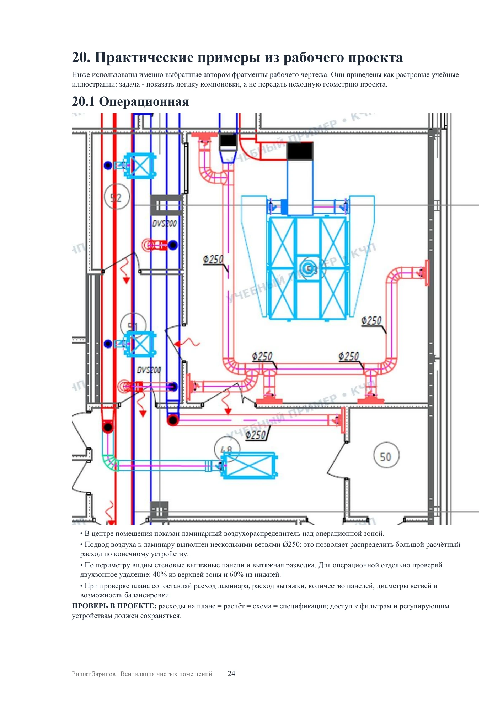
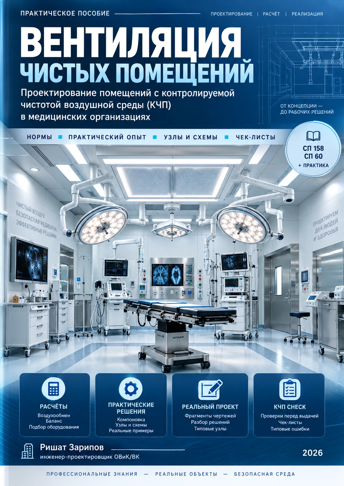
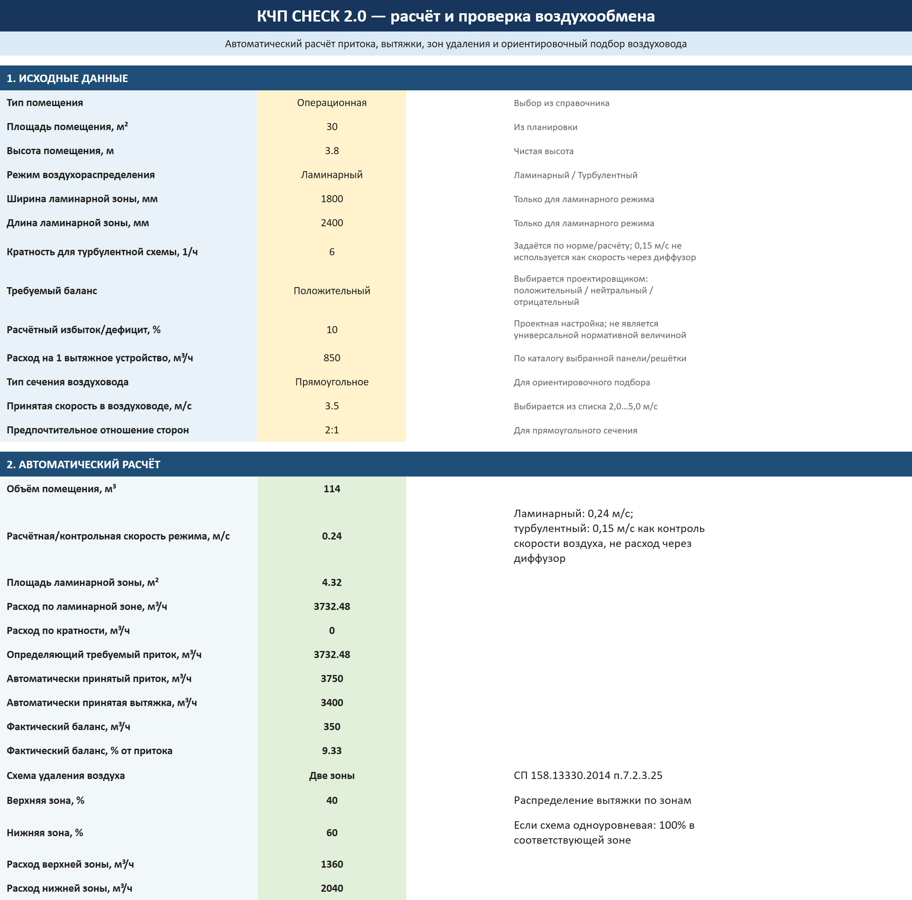

Операционная
Расчет ламинарного потока, приток, вытяжка и баланс.
ДЛЯ ПРОЕКТИРОВЩИКОВ ОВиК
Практическое пособие для проектировщика ОВиК: от исходных данных и расчета воздухообмена до готовых решений, примеров и проверки в КЧП CHECK.
PDF + Excel CHECK + примеры проектных решений


Практическое пособие
для проектировщика

Контроль расчета помещения
01 / РЕЗУЛЬТАТ РАБОТЫ
02 / ПРЕВЬЮ ПРОДУКТА
Не только теория — в комплекте есть расчеты, схемы и проектные примеры.
Расчет ламинарного потока, приток, вытяжка и баланс.
Компоновка воздухораспределения и удаление воздуха.
Состав установки, фильтрация, нагрев, охлаждение, ПУВ и резервирование.
Пока изображения не добавлены, в превью отображаются технические заглушки.
03 / EXCEL КЧП CHECK (.XLSM)
Excel-инструмент помогает проверить основные параметры помещения до выпуска чертежей.
ИТОГОВОЕ ЗАКЛЮЧЕНИЕ
Если в исходных данных или принятом решении появляется существенное противоречие, CHECK помогает обратить на него внимание в итоговом заключении.
Кнопка «Проверить расчет» работает через VBA. Для нее нужно разрешить макросы в Excel.
CHECK не заменяет проектировщика. Он помогает не пропустить ошибку.
04 / СОДЕРЖАНИЕ ПОСОБИЯ
05 / РАБОЧИЙ АЛГОРИТМ
Последовательность работы, которую можно проследить на проектном примере из комплекта.
06 / ЧТО ВЫ ПОЛУЧИТЕ
2 основных файла + расчёты, проектные примеры и итоговый алгоритм проверки внутри пособия.
Основной материал по проектированию КЧП.
Отдельный Excel-инструмент для контрольной проверки основных параметров расчёта.
Реальные проектные фрагменты • практические расчёты • итоговый алгоритм проектировщика.
07 / ДЛЯ КОГО
Понятная последовательность действий и примеры.
CHECK, расчеты и проектные решения для рабочей проверки.
Быстрый контроль логики принятого решения.
10 / ВСЕ ДЛЯ РАБОТЫ
Пособие, инструмент проверки и примеры —
в одном наборе для проектировщика.
Один исправленный расчет или предотвращенная переделка может сэкономить больше времени, чем стоимость комплекта.
2 990 ₽
PDF + КЧП CHECK (.XLSM)
Получить комплектОплата пока не подключена. Возможность покупки появится позже.
11 / ВОПРОСЫ И ОТВЕТЫ
В комплект входят два основных файла: практическое пособие PDF и КЧП CHECK (.XLSM). Внутри пособия также представлены расчётные примеры, реальные проектные фрагменты и итоговый алгоритм проектировщика.
Пособие дает понятную последовательность действий и примеры. Для применения расчетов нужны базовые знания вентиляции и исходные данные конкретного объекта.
Да. В пособии представлены расчётные и проектные примеры: операционная, палата / ПИТ, решения по воздухообмену и приточным установкам КЧП.
Вы вводите параметры помещения и системы, проверяете расчетные данные и запускаете кнопку «Проверить расчет». CHECK помогает обратить внимание на существенные противоречия в итоговом заключении. Принятое решение проверяет проектировщик.
Для работы кнопки «Проверить расчет» требуется разрешить выполнение макросов в Excel. Расчетные формулы и данные книги остаются доступными для просмотра и ручной проверки.
Нет. Пособие не заменяет СП, ГОСТ, СанПиН и задание технолога. Параметры конкретного объекта рассчитываются отдельно.
Оплата пока не подключена. Порядок автоматической выдачи будет указан перед началом продаж.
ОТ РАСЧЕТА — К УВЕРЕННОМУ РЕШЕНИЮ